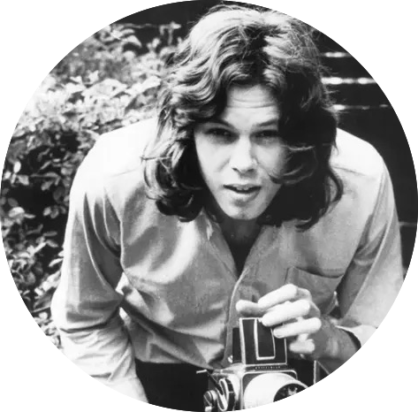

September 17th
I am in Vermont for my cousin's wedding this weekend. My family and I are staying at a cabin in the woods. On the drive from our house over to the camp where the wedding is being held, we listened to Nick Drake. The drive is 7 minutes long, from the house to the camp. The drive goes through the woods of Vermont, passing a lake and isolated homes.
✯ Place To Be ✯

And now I'm older, see it face to face
And now I'm older, gotta get up, clean the place
♪
And I was green, greener than the hill
Where the flowers grew and the sun shone still

Nick Drake has a very calm melodic style that feels very fitting for driving in the woods. The type of music you would play around a campfire.